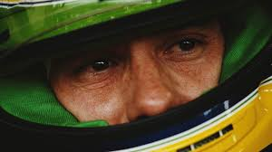
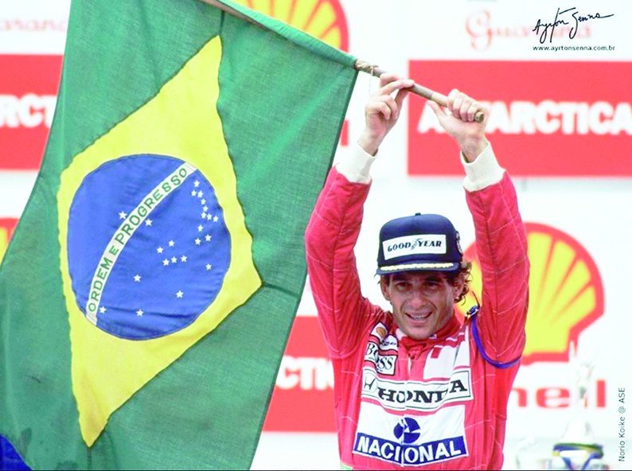
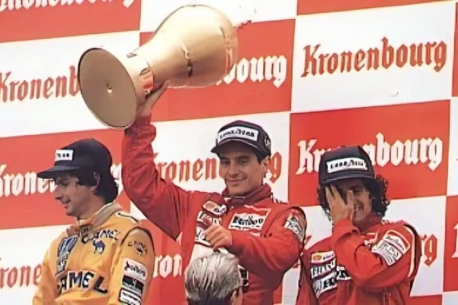
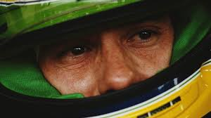
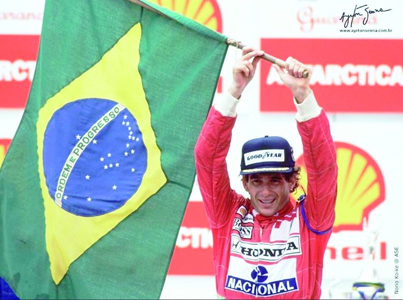
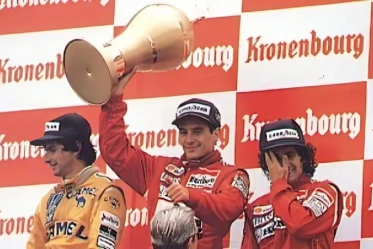
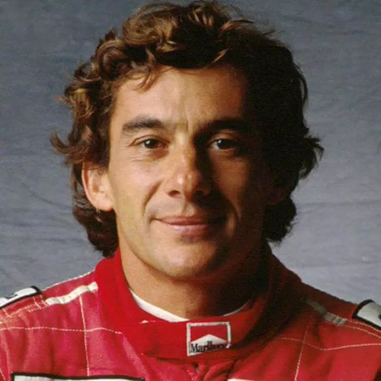
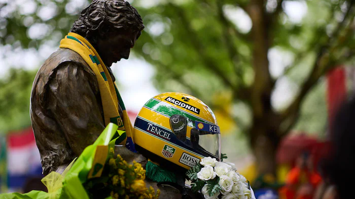
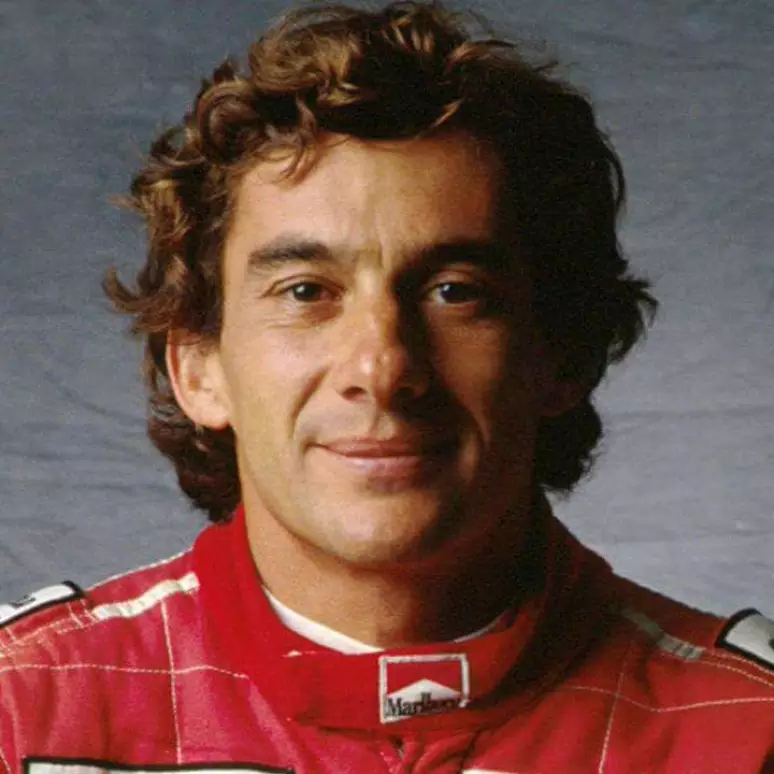
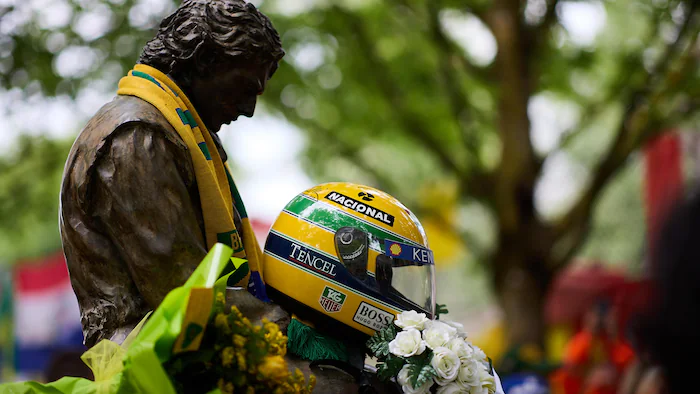

Quem é Ayrton Senna?
Ayrton Senna foi um piloto de Fórmula 1 das décadas de 1980 e 1990, e é considerado o maior ídolo brasileiro do automobilismo. Nasceu em São Paulo, no dia 21 de março de 1960, e morreu de maneira trágica em 1º de maio de 1994, após colidir com uma mureta de proteção no Grande Prêmio de San Marino, em Ímola.
Carreira
1984: Toleman Senna atraiu a atenção de diversas equipes de Fórmula 1 como Williams, McLaren, Brabham e Toleman. Ao contrário do que se imagina, seu compatriota Nelson Piquet não se opôs à sua contratação pela Brabham. A patrocinadora da equipe, a Parmalat, tinha mais interesse em ter um piloto italiano na equipe do que ter dois brasileiros, influenciando na decisão da equipe em contratar o piloto italiano Teo Fabi para a temporada. Senna, imaginando que Piquet tinha mais influência na equipe, ficou ressentido, declarando em uma entrevista que "Ele (Piquet) não ajudou e nem atrapalhou", dando a entender que sua ida à Brabham foi vetada pelo então bicampeão mundial. Assim, das três remanescentes, apenas a equipe Toleman ofereceu a ele um carro para disputar o campeonato do ano de 1984. Senna marcou seu primeiro ponto no campeonato mundial de pilotos logo no segundo grande prêmio que disputou, em Kyalami na África do Sul. Ele repetiu o resultado duas semanas depois, no Grande Prêmio da Bélgica, disputado no circuito de Zolder. Uma semana depois, o piloto brasileiro não conseguiu tempo para o Grande Prêmio de San Marino, em Imola. Tal fato aconteceu devido a um desentendimento entre a equipe Toleman e a fábrica italiana de pneus Pirelli, Ayrton e seu companheiro de equipe, Johnny Cecotto, não puderam participar dos treinos de sexta-feira. No sábado, sob chuva intensa, Ayrton Senna foi o piloto mais rápido na pista molhada, mas longe das marcas obtidas pelos seus adversários no dia anterior na pista seca. Depois, porém, com a pista seca, com muitos problemas no motor turbo Hart de seu Toleman, Senna se viu impedido de fazer um bom tempo. Uma semana antes do GP de Mônaco de 1984, ele participou do evento promocional Corrida dos Campeões de Nurburgring, ao lado de ex-campeões da F-1, como Sir Stirling Moss, Jack Brabham, John Surtees, Phil Hill, Niki Lauda e o futuro campeão Alain Prost. Todos correram com o mesmo carro de rua - um Mercedes 190 E 2,3 - 16 - e Senna chegou em primeiro, logo à frente de Niki Lauda.
No GP de Mônaco, seu desempenho trouxe-lhe todas as atenções das demais equipes. Classificou-se em 13º no grid de largada, e fez um rápido progresso através das estreitas ruas de Monte Carlo. Na volta 19, passou Niki Lauda, que estava em segundo, e começou a ameaçar o líder Alain Prost, e continuou por várias voltas lutando pelo primeiro lugar com seu limitado Toleman. A esta altura já chovia muito no circuito e a corrida foi interrompida na volta 31 por razões de segurança. Senna chegou a comemorar a vitória ultrapassando Alain Prost a poucos metros da linha de chegada, mas, nesses casos, o regulamento mandava considerar as colocações da volta anterior e, ainda, por ter sido interrompida com menos da metade da corrida, os pontos deveriam ser computados pela metade.[26] Senna ainda ganharia dois pódios naquele ano - terceiro no Grande Prêmio da Grã-Bretanha, em Brands Hatch, e no GP de Portugal, em Estoril. Isso o deixou empatado com Nigel Mansell com treze pontos, apesar de ter perdido o GP da Itália quando a Toleman o suspendeu de correr por quebra de contrato, depois de ele ter assinado com a Lotus para a temporada seguinte. Suas atuações fizeram-no a revelação da temporada, segundo revistas especializadas. Ainda em 1984, Senna tomou parte nos 1000 km de Nürburgring, onde pilotou o Porsche 956, correndo em parceria com Henri Pescarolo e Stefan Johansson. Apesar de ser sua estreia nesse tipo de competição, Ayrton Senna conseguiu fazer a melhor volta em três oportunidades durante a corrida, tanto em pista seca como em condições de chuva, além de marcar o sétimo melhor tempo, embaixo de chuva. Somados os tempos dos três pilotos, a equipe largou em nono lugar. No final, a equipe de Ayrton terminou em oitavo lugar sendo prejudicada por um problema que obrigou o carro a ficar parado durante 17 minutos, aproximadamente oito voltas. A equipe acreditava na época que sem o referido problema, o carro chegaria em terceiro lugar. Esta corrida, juntamente com a Corrida dos Campeões de Nurburgring, foram as únicas que Senna realizou correndo em carros com cockpit fechado. Em novembro de 1984, Ayrton sofreu uma paralisia facial, que a princípio se pensou ser um derrame. Na verdade, era uma paralisia facial periférica, resultado de uma mastoidite, inflamação do nervo mastoide, responsável pelos comandos do cérebro à musculatura facial. No princípio, Senna tratou a doença com altas doses de cortisona, porém, com medo de efeitos colaterais, experimentou um tratamento alternativo com o médico Haruo Nishimura. No entanto, o tratamento não surtiu efeito, tendo assim que voltar ao tratamento convencional. O problema foi resolvido quando o preparador físico Nuno Cobra começou a tratar do piloto.
Conquistas e Realizações de Ayrton Senna
| Conquista | Ano |
|---|---|
| Campeonato Mundial de Fórmula 1 | 1988, 1990, 1991 |
| Pole Positions em uma Única Temporada (recorde) | 13 em 1988 |
| Vitórias em um Mesmo Grande Prêmio | 6 no Grande Prêmio de Mônaco |
| Vitória em Seis Grandes Prêmios Consecutivos | 1989-1990 |
| Conquista do Grande Prêmio do Brasil | 1991, 1993, 1995 |
| Vitória na Corrida Mais Curta da História da Fórmula 1 | 1991 |
| 65 pole Positions na Fórmula 1 |
 





 


